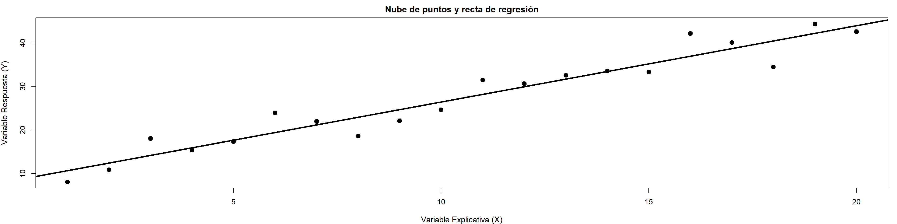
Bioestadística Fundamental
Departamento de Estadı́stica, Sede Bogotá
Clase 16
Contenido
Parte I: Modelo de Regresión Lineal Simple
- Introducción a la regresión lineal.
- Análisis de datos bivariados.
- Asociacion y causalidad.
- Diagrama de dispersión.
- Modelo de regresión lineal simple.
- Interpretación de los parámetros.
Parte II: Estimación
- Estimación de parámetros.
- Valores ajustados y residuos.
- Método de mínimos cuadrados.
- Estimación de los coeficientes.
- Coeficiente de determinación \(R^2\).
Parte III: Validación Estadística del Modelo
- Supuestos del modelo.
- Diagnósticos del modelo
- Inferencia sobre los coeficientes.
- Códigos usados en R.
- Ejemplo de aplicación.
- Taller en Clase.
Regresión Lineal Simple
Modelando la relación entre variables mediante mínimos cuadrados
Bioestadística Fundamental, Departamento de Estadística, UNAL Bogotá
PRIMERA PARTE
Modelo de Regresión Lineal Simple
Introducción a la regresión lineal │ Análisis de datos bivariados │ Asociación y Causalidad │ Diagrama de dispersión │ Modelo de regresión lineal simple │ Interpretación de los parámetros
Introducción
En numerosos problemas científicos, agrícolas, económicos e industriales surge la necesidad de comprender cómo una variable responde a los cambios observados en otra.
La regresión lineal es una herramienta estadística que permite modelar esta relación mediante una ecuación matemática sencilla, facilitando la explicación de fenómenos y la realización de predicciones.
Su principal objetivo es describir y cuantificar la relación existente entre una variable respuesta y una variable explicativa.
Agricultura
Fertilizante → Rendimiento
Educación
Horas de estudio → Calificación
Economía
Publicidad → Ventas
La regresión lineal permite explicar, cuantificar y predecir relaciones entre variables.
Análisis de Datos Bivariados
En numerosos estudios es necesario analizar simultáneamente dos variables medidas sobre las mismas unidades experimentales con el propósito de identificar posibles patrones de asociación entre ellas.
Cada observación se representa mediante un par ordenado \((X,Y)\), donde una variable actúa como explicativa y la otra como respuesta.
Variable Explicativa (\(X\))
Corresponde a la variable utilizada para explicar o predecir el comportamiento de otra variable.
Ejemplo:
Fertilizante aplicado (kg/ha)
Variable Respuesta (\(Y\))
Representa la característica cuyo comportamiento se desea explicar o predecir.
Ejemplo:
Rendimiento del cultivo (t/ha)
Importancia del Estudio de Relaciones entre Variables
El análisis de relaciones entre variables constituye uno de los objetivos fundamentales de la estadística, ya que permite comprender cómo diferentes características de un fenómeno interactúan entre sí.
Identificar estas relaciones facilita la toma de decisiones, la formulación de hipótesis y la construcción de modelos que describan el comportamiento observado en los datos.
A partir de estas relaciones es posible obtener información útil para:
Explicar
Comprender cómo una variable cambia cuando otra experimenta variaciones.
Describir
Identificar tendencias, patrones y comportamientos presentes en los datos.
Predecir
Estimar el valor esperado de una variable a partir de información conocida.
El análisis de relaciones entre variables permite pasar de una descripción de los datos a una comprensión más profunda de los fenómenos estudiados.
Asociación y Causalidad
En el análisis estadístico es frecuente encontrar variables que presentan algún grado de asociación. Sin embargo, la existencia de una relación estadística no implica necesariamente una relación de causa y efecto.
Dos variables pueden variar conjuntamente debido a múltiples factores, incluyendo la presencia de variables externas o simplemente coincidencias observadas en los datos.
Asociación
Existe cuando los cambios observados en una variable se acompañan de cambios en otra variable.
Causalidad
Existe cuando las variaciones en una variable producen directamente cambios en la otra.
\[\text{Asociación ≠ Causalidad}\]
Ejemplos de Asociación y Causalidad
La presencia de una asociación entre variables no siempre implica una relación de causa y efecto.
| Situación | Asociación | ¿Existe causalidad? |
|---|---|---|
| Horas de estudio y calificación | Generalmente positiva: al aumentar las horas de estudio suelen mejorar las calificaciones. | Posiblemente sí, aunque el rendimiento también depende de otros factores como la motivación y las habilidades del estudiante. |
| Fertilizante y rendimiento del cultivo | Generalmente positiva: mayores dosis suelen asociarse con mayores rendimientos. | Posiblemente sí, pero la respuesta también depende del suelo, clima, manejo y genética del cultivo. |
| Ventas de helados y ahogamientos | Positiva: ambas variables tienden a aumentar durante épocas cálidas. | No. La temperatura actúa como una variable externa que afecta simultáneamente ambas variables. |
| Temperatura y consumo eléctrico | Positiva: el consumo aumenta cuando la temperatura es elevada. | Sí existe un mecanismo plausible, ya que el uso de sistemas de refrigeración incrementa la demanda energética. |
| Conclusión | La asociación describe cómo dos variables cambian conjuntamente. | La causalidad implica que una variable produce cambios directos en la otra. |
Tipos de Asociación entre Variables
La relación entre dos variables puede manifestarse de diferentes formas dependiendo de cómo cambien sus valores de manera conjunta.
Positiva
Cuando una variable aumenta, la otra tiende a aumentar.
Negativa
Cuando una variable aumenta, la otra tiende a disminuir.
Nula
No se observa un patrón claro de cambio entre las variables.
La dirección de la asociación es uno de los primeros aspectos que se evalúan al analizar datos bivariados.
Diagrama de Dispersión
Formalmente, esta representación gráfica recibe el nombre de diagrama de dispersión y constituye una de las herramientas más importantes en el análisis de datos bivariados.
Cada observación se representa mediante un punto cuyas coordenadas corresponden a los valores observados de las variables \((X,Y)\).
A partir de un diagrama de dispersión es posible identificar la dirección, la intensidad y la forma de la relación entre variables, información fundamental para la construcción de modelos de regresión.
Dirección
Positiva, negativa o nula.
Intensidad
Débil, moderada o fuerte.
Forma
Lineal o no lineal.
Gráficamente
La dirección de la asociación puede identificarse mediante el patrón observado en un diagrama de dispersión.
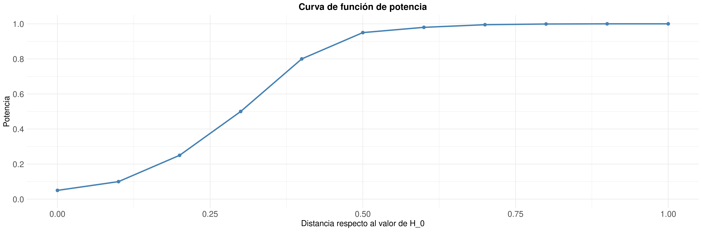
Interpretación: Una asociación positiva presenta una tendencia ascendente, una asociación negativa muestra una tendencia descendente y una asociación nula no exhibe un patrón claramente identificable.
Fuerza de la Asociación
Además de la dirección de la relación, es importante evaluar qué tan cerca se encuentran las observaciones de una tendencia común.
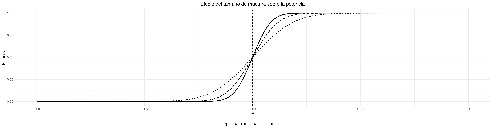
Interpretación: Cuanto más próximos se encuentren los puntos a una línea recta, mayor será la intensidad de la asociación entre las variables.
¿Cómo Resumir la Relación Observada?
El diagrama de dispersión constituye una herramienta fundamental para visualizar la relación entre dos variables cuantitativas.
Sin embargo, cuando el número de observaciones es grande, resulta difícil describir la tendencia general únicamente mediante una inspección visual.
Surge entonces la necesidad de encontrar una representación matemática que resuma el comportamiento promedio de los datos observados.
Buscamos una función que represente la tendencia general observada entre las variables.
¿Puede una línea recta describir esta relación?
En muchos fenómenos reales, la tendencia observada puede aproximarse mediante una línea recta que resume el comportamiento promedio de los datos.
La Idea Fundamental de la Regresión Lineal
Cuando los datos muestran una tendencia aproximadamente lineal, resulta útil resumir dicha relación mediante una recta.
Esta recta representa el comportamiento promedio de la variable respuesta para diferentes valores de la variable explicativa.
En regresión lineal, el objetivo consiste en encontrar la recta que mejor describa la tendencia general observada en los datos.
La recta que resume la relación entre las variables se denomina Recta de Regresión.
La regresión lineal busca construir una recta que represente de la mejor manera posible la tendencia observada en la nube de puntos.
La Recta de Regresión
Cuando existe una tendencia aproximadamente lineal entre dos variables, resulta posible resumir dicha relación mediante una recta.
Esta recta representa el comportamiento promedio de la variable respuesta a medida que cambia la variable explicativa.
La línea representa la tendencia general observada en los datos y recibe el nombre de recta de regresión.
¿La Recta Describe Perfectamente los Datos?
Aunque la recta resume la tendencia general de los datos, las observaciones individuales no suelen ubicarse exactamente sobre ella.
Cada punto presenta una pequeña diferencia respecto al valor predicho por la recta.
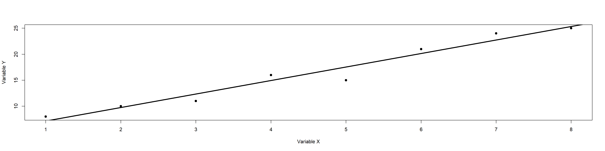
La recta representa una tendencia promedio, no una descripción exacta de cada observación.
Variabilidad Alrededor de la Recta
Las diferencias entre los valores observados y los valores representados por la recta reflejan la variabilidad presente en los datos.
Estas discrepancias pueden originarse por factores no observados, errores de medición o variabilidad natural del fenómeno estudiado.
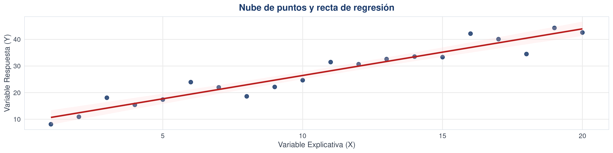
Las líneas punteadas representan las diferencias entre los valores observados y los valores estimados por la recta.
¿Por Qué los Puntos No Caen Exactamente Sobre la Recta?
La recta de regresión representa una tendencia promedio, pero las observaciones reales suelen presentar cierta variabilidad alrededor de dicha tendencia.
Por esta razón, los valores observados no coinciden exactamente con los valores representados por la recta.
Factores no observados
Variables que influyen en la respuesta pero que no fueron incluidas en el análisis.
Error de medición
Imprecisiones durante el proceso de observación o registro de los datos.
Variabilidad natural
Fluctuaciones inherentes al fenómeno que se está estudiando.
La recta explica parte de la variabilidad observada, pero no toda la variación presente en los datos.
Construcción del Modelo de Regresión Lineal Simple
La relación observada entre dos variables puede describirse mediante una componente sistemática representada por una recta y una componente aleatoria asociada a la variabilidad presente en los datos.
Al combinar ambos elementos se obtiene el modelo de regresión lineal simple, una herramienta que permite describir y estudiar la relación entre una variable respuesta y una variable explicativa.
\[ Y=\beta_0+\beta_1X+e \]
Parte sistemática
Representa la tendencia promedio descrita por la recta.
Parte aleatoria
Representa la variabilidad no explicada por la recta.
El modelo combina una tendencia promedio y una componente aleatoria para representar el comportamiento de los datos.
Modelo de Regresión Lineal Simple
El modelo de regresión lineal simple describe la relación entre una variable respuesta y una variable explicativa mediante una ecuación lineal.
Este modelo permite representar la tendencia promedio observada en los datos e incorporar la variabilidad asociada a factores no observados.
\[ Y_i=\beta_0+\beta_1X_i+e_i \]
| Componente | Significado |
|---|---|
| \(Y_i\) | Valor observado de la variable respuesta. |
| \(X_i\) | Valor observado de la variable explicativa. |
| \(\beta_0\) | Intercepto del modelo. |
| \(\beta_1\) | Pendiente de la recta de regresión. |
| \(e_i\) | Error aleatorio asociado a la observación. |
Cada observación puede expresarse como la suma de una componente sistemática \((\beta_0+\beta_1X_i)\) y una componente aleatoria \((\varepsilon_i)\).
Interpretación Geométrica de los Parámetros
Los parámetros del modelo determinan completamente la posición y la forma de la recta de regresión. Cada uno cumple una función específica que puede visualizarse geométricamente.
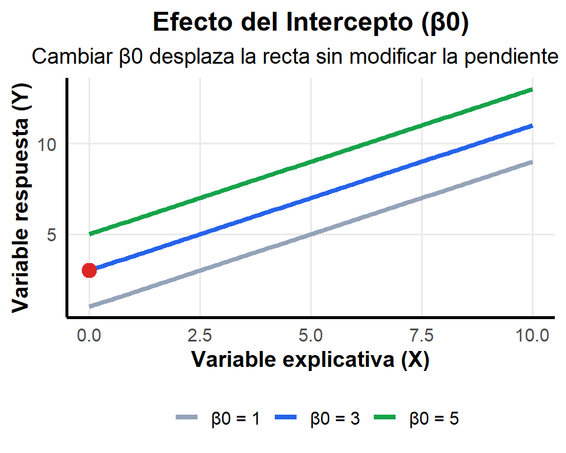
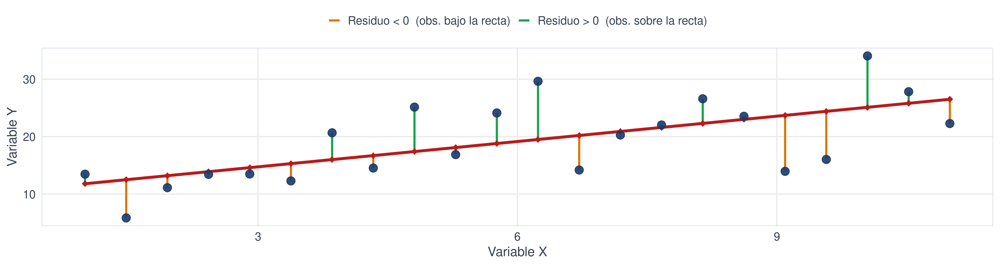
Mientras el intercepto desplaza la recta verticalmente, la pendiente modifica su inclinación y la intensidad de la relación entre las variables.
SEGUNDA PARTE
Estimación
Estimación de parámetros │ Valores ajustados y residuos │ Método de mínimos cuadrados │ Estimación de coeficientes │ Coeficiente de determinación
Estimación de Parámetros
El modelo de regresión lineal simple describe la relación entre las variables mediante los parámetros poblacionales \(\beta_0\) y \(\beta_1\).
Sin embargo, estos parámetros son generalmente desconocidos porque no se dispone de información de toda la población.
Modelo Poblacional
\[ Y_i=\beta_0+\beta_1X_i+e_i \]
\(\Longrightarrow\)
Modelo Estimado
\[ \hat{Y}_i=b_0+b_1X_i \]
A partir de una muestra, los parámetros desconocidos \(\beta_0\) y \(\beta_1\) son reemplazados por sus estimaciones \(b_0\) y \(b_1\).
Valores Ajustados y Residuos
Una vez estimada la recta de regresión, es posible obtener para cada observación un valor predicho o ajustado por el modelo.
La diferencia entre el valor observado y el valor ajustado recibe el nombre de residuo.
\[ e_i = y_i-\hat y_i \]
Valor Ajustado
Es el valor estimado por la recta de regresión para una observación dada.
\[ \hat y_i=b_0+b_1x_i \]
Residuo
Mide qué tan lejos se encuentra una observación respecto a la recta ajustada.
\[ e_i=y_i-\hat y_i \]
Los residuos cuantifican el error de predicción del modelo para cada observación.
¿Cómo obtenemos la mejor recta?
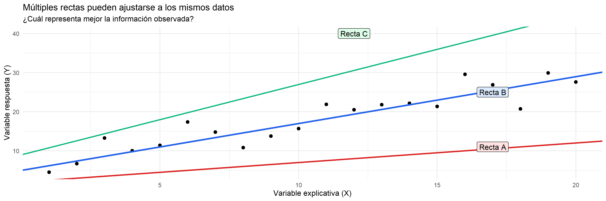
El Método de los Mínimos Cuadrados Ordinarios (MCO) permite identificar la recta que mejor se ajusta a los datos observados.
Método de Mínimos Cuadrados Ordinarios (MCO)
El Método de Mínimos Cuadrados Ordinarios (MCO) es el procedimiento utilizado para estimar los parámetros de un modelo de regresión lineal.
Su objetivo es encontrar la recta que mejor representa la relación entre las variables, determinando los valores de \(b_0\) y \(b_1\) que reducen al mínimo la diferencia entre los valores observados y los valores estimados.
\[ \hat{y_i}=b_0+b_1x_i \]
Residuo \[ e_i=y_i-\hat{y_i} \]
Diferencia entre el valor observado y el valor estimado.
Criterio de MCO
\[ \min \sum_{i=1}^{n}e_i^2 \]
Busca minimizar la suma de los errores al cuadrado.
Propiedades del MCO
En el Método de Mínimos Cuadrados Ordinarios (MCO) se busca estimar los parámetros del modelo minimizando la suma de los errores al cuadrado:
\[ \min \sum_{i=1}^{n} (y_i - \hat{y_i})^2 \]
El uso del cuadrado no es arbitrario, sino que garantiza propiedades matemáticas importantes que hacen que el método sea estable y resoluble.
Propiedades del criterio MCO
- Evita la cancelación entre errores positivos y negativos.
- Penaliza de forma más fuerte los errores grandes.
- Genera una función objetivo continua y diferenciable.
- Permite obtener estimadores con solución analítica cerrada.
- Conduce a un problema de optimización convexa (mínimo único).
Interpretación geométrica
Cada término representa la distancia vertical entre un punto observado y la recta ajustada.
El MCO busca la recta que minimiza la suma de todas esas distancias al cuadrado.
\[ e_i = y_i - \hat{y_i} \]
Estimadores de Mínimos Cuadrados Ordinarios (MCO)
A partir de la minimización de la suma de los errores al cuadrado, se obtienen las expresiones cerradas para los estimadores de los parámetros del modelo de regresión lineal.
Estos estimadores son los valores de \(\beta_0\) y \(\beta_1\) que mejor ajustan la recta a los datos observados.
Pendiente \(\beta_1\)
\[ \hat{\beta}_1 =b_1= \frac{\sum_{i=1}^{n}(x_i - \bar{x})(y_i - \bar{y})} {\sum_{i=1}^{n}(x_i - \bar{x})^2} \]
Intercepto \(\hat{\beta}_0\)
\[ \hat{\beta}_0 =b_0 =\bar{y} - \hat{\beta}_1 \bar{x} \]
Estas expresiones muestran que la recta de regresión depende únicamente de la relación conjunta entre las variables y sus promedios, lo que garantiza una estimación consistente del comportamiento lineal de los datos.
Coeficiente de determinación (\(R^2\))
El coeficiente de determinación \(R^2\) mide la proporción de la variabilidad total de la variable respuesta que es explicada por el modelo de regresión.
Cuanto mayor sea su valor, mejor será la capacidad explicativa del modelo.
\[ R^2 = 1-\frac{\sum_{i=1}^{n}(y_i-\hat{y}_i)^2} {\sum_{i=1}^{n}(y_i-\bar y)^2} = 1-\frac{SCR}{SCT} = \frac{SCM}{SCT} \]
Donde:
\[ SCR=\sum_{i=1}^{n}(y_i-\hat y_i)^2 \rightarrow \text{Suma de Cuadrados Residual.} \]
\[ SCM=\sum_{i=1}^{n}(\hat y_i-\bar y)^2 \rightarrow \text{Suma de Cuadrados del Modelo.} \]
\[ SCT=\sum_{i=1}^{n}(y_i-\bar y)^2 = SCM + SCR \rightarrow \text{Suma de Cuadrados Total.} \]
Interpretación
\(R^2 = 1\): ajuste perfecto
\(R^2 = 0\): modelo no explica nada
\(R^2 = 0.75\): el modelo explica el 75% de la variabilidad
Alerta: Un \(R^2\) alto no garantiza buen ajuste si los supuestos se violan. Siempre acompañar con diagnóstico de residuos.
TERCERA PARTE
Validación Estadística del Modelo
Supuestos del modelo │ Diagnósticos del modelo │ Inferencia sobre los coeficientes │ Códigos usados en R │ Ejemplo de aplicación │ Taller en Clase.
Importancia de los Residuos para la Validación del Modelo
Los residuos representan la diferencia entre los valores observados y los valores estimados por el modelo de regresión.
Su análisis permite evaluar la calidad del ajuste y constituye la base para verificar si los supuestos estadísticos del modelo son razonables.
\[e_i = y_i - \hat{y}_i\]
Linealidad
Los residuos ayudan a identificar patrones que indiquen una relación mal especificada.
Varianza Constante
Permiten verificar si la dispersión de los errores permanece estable.
Normalidad e Independencia
Su comportamiento permite validar los supuestos necesarios para la inferencia.
Los supuestos del modelo se evalúan a partir del comportamiento de los residuos.
Supuestos del modelo de regresión lineal simple
Para que las estimaciones obtenidas mediante el método de Mínimos Cuadrados Ordinarios (MCO) sean confiables, el modelo debe satisfacer ciertos supuestos fundamentales.
Linealidad
\(E(Y|X)=\beta_0+\beta_1X\)
La relación entre X e Y debe ser aproximadamente lineal.
Independencia
Los errores \(e_i\) son independientes entre sí.
Normalidad
\(e_i \sim N(0,\sigma^2)\). Necesaria para intervalos de confianza y pruebas de hipótesis.
Homocedasticidad
\(\text{Var}(e_i)=\sigma^2\) constante.
Si la varianza cambia con los valores de \(X\), se presenta heterocedasticidad.
Idea clave:
La linealidad garantiza que el modelo represente adecuadamente la relación entre las variables, mientras que la normalidad y la homocedasticidad permiten realizar inferencias estadísticas confiables.
El incumplimiento de estos supuestos puede afectar la validez de las inferencias realizadas sobre el modelo.
Diagnóstico del modelo
Una vez ajustado el modelo de regresión lineal, es necesario verificar si los supuestos estudiados se cumplen razonablemente.
Para ello se utilizan herramientas gráficas y pruebas estadísticas basadas en el análisis de los residuos.
| Supuesto | Herramienta de diagnóstico |
|---|---|
| Linealidad | Residuos vs Ajustados |
| Independencia | Durbin-Watson |
| Homocedasticidad | Breusch-Pagan |
| Normalidad | Histograma y QQ-Plot |
Objetivo: comprobar que los residuos se comportan de acuerdo con los supuestos del modelo.
Gráfico de residuos
Los residuos representan las diferencias entre los valores observados y los valores predichos por el modelo.
Su comportamiento permite evaluar simultáneamente los supuestos de linealidad y homocedasticidad.
\[ e_i = y_i - \hat{y}_i \]
Comportamiento esperado
- Residuos centrados en cero.
- Distribución aleatoria.
- Dispersión aproximadamente constante.
Señales de alerta
- Patrones curvos.
- Tendencias sistemáticas.
- Forma de embudo.
Diagnóstico de normalidad
La normalidad de los errores es importante para la construcción de intervalos de confianza y pruebas de hipótesis.
Herramientas utilizadas:
- Histograma de residuos.
- Gráfico Q-Q.
- Prueba de Shapiro-Wilk.
Interpretación:
Si los puntos del gráfico Q-Q siguen aproximadamente la diagonal, existe evidencia de que los residuos se distribuyen normalmente.
Diagnóstico visual de los supuestos
Los supuestos de regresión lineal pueden evaluarse visualmente mediante gráficos diagnósticos generados a partir de los residuos del modelo.
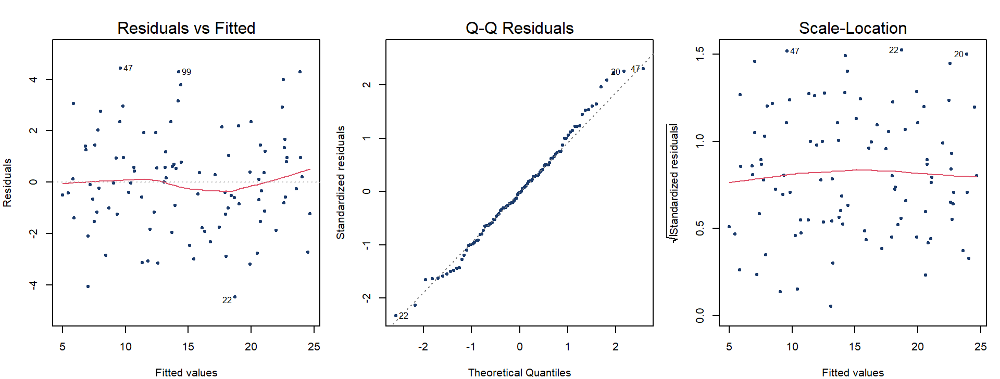
Interpretación de los gráficos diagnósticos
Residuos vs Ajustados
✓ Los puntos deben distribuirse aleatoriamente alrededor de cero.
✓ No deben observarse patrones ni curvaturas.
Evalúa: Linealidad.
QQ-Plot
✓ Los puntos deben seguir aproximadamente la línea diagonal.
✓ Desviaciones importantes sugieren falta de normalidad.
Evalúa: Normalidad.
Scale-Location
✓ La dispersión debe mantenerse aproximadamente constante.
✓ Formas de embudo sugieren heterocedasticidad.
Evalúa: Homocedasticidad.
Si los tres gráficos presentan el comportamiento esperado, los supuestos del modelo pueden considerarse razonablemente satisfechos.
Inferencia sobre los coeficientes
Una vez ajustado el modelo, es necesario evaluar si la variable explicativa tiene un efecto significativo sobre la variable respuesta.
Para ello se realizan pruebas de hipótesis sobre los coeficientes de regresión.
Prueba de hipótesis
\[ H_0:\beta_1=0 \]
\[ H_1:\beta_1\neq0 \]
\(H_0\): No existe relación lineal.
\(H_1\): Existe relación lineal entre \(X\) e \(Y\).
Estadístico de prueba
\[ t= \frac{\hat{\beta}_1} {SE(\hat{\beta}_1)} \]
Compara el efecto estimado con la incertidumbre de la estimación.
Decisión mediante el valor-p
- Si \(p < 0.05\), se rechaza \(H_0\).
- Si \(p \ge 0.05\), no existe evidencia suficiente para rechazar \(H_0\).
Interpretación: Un valor-p pequeño indica que la variable explicativa contribuye significativamente al modelo.
Flujo de trabajo en R para regresión lineal simple
El análisis de una regresión lineal simple sigue una secuencia lógica que va desde la exploración de los datos hasta la interpretación de los resultados.
| Etapa del análisis | Función en R |
|---|---|
| Explorar los datos |
summary(datos)
|
| Visualizar la relación entre variables |
plot(y ~ x)
|
| Ajustar el modelo |
lm(y ~ x)
|
| Obtener coeficientes e inferencia |
summary(modelo)
|
| Evaluar supuestos |
plot(modelo)
|
| Realizar predicciones |
predict(modelo)
|
Idea clave: La función lm() es el punto de partida del análisis; las demás funciones permiten interpretar, validar y utilizar el modelo ajustado.
Ejemplo
La fertilización nitrogenada es una de las prácticas de manejo más importantes en la producción de maíz, ya que influye directamente sobre el crecimiento vegetativo y el rendimiento del cultivo.
Contexto
Un ingeniero agrónomo desea determinar si incrementar la dosis de nitrógeno aplicada al cultivo genera aumentos en el rendimiento del maíz.
Variables
Variable explicativa
\[ X = \text{Dosis de nitrógeno (kg/ha)} \]
Variable respuesta
\[ Y = \text{Rendimiento (t/ha)} \]
Objetivo
Evaluar si existe una relación lineal significativa entre la dosis de nitrógeno aplicada y el rendimiento obtenido en el cultivo.
Pregunta de investigación:
¿El aumento de la fertilización nitrogenada produce incrementos significativos en el rendimiento del maíz?
Datos experimentales
| Dosis N (kg/ha) | Rendimiento (t/ha) |
|---|---|
| 40 | 4.2 |
| 60 | 4.8 |
| 80 | 5.3 |
| 100 | 5.9 |
| 120 | 6.4 |
| 140 | 6.8 |
| 160 | 7.3 |
| 180 | 7.8 |
A simple vista parece existir una tendencia creciente entre ambas variables.
Exploración inicial de los datos
Antes de ajustar un modelo de regresión, es importante visualizar la relación entre las variables para identificar posibles tendencias, patrones o valores atípicos.
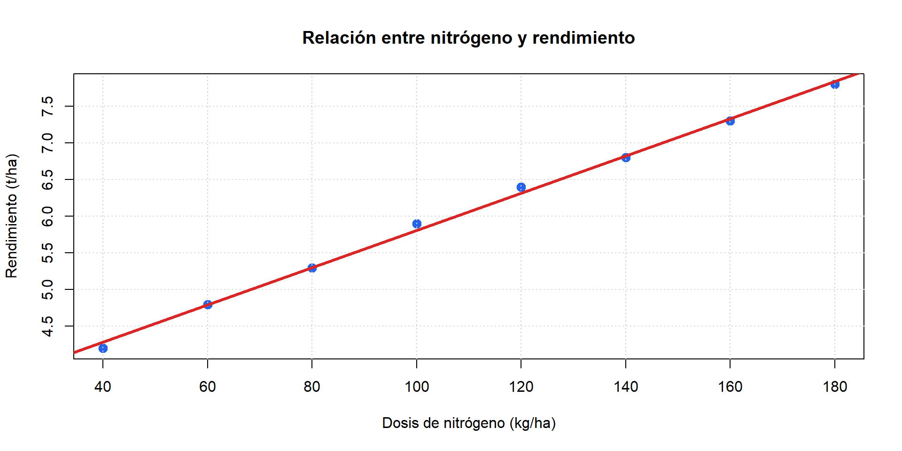
Observación visual
A medida que aumenta la dosis de nitrógeno, el rendimiento del cultivo parece incrementarse.
Primera hipótesis
Podría existir una relación lineal positiva entre ambas variables.
Ajuste e interpretación del modelo
Para cuantificar la relación entre la dosis de nitrógeno y el rendimiento del maíz, se ajustó un modelo de regresión lineal simple mediante mínimos cuadrados ordinarios.
Modelo estimado por MCO en R
\[ \hat{Y}=3.26+0.0258X \]
Intercepto \((b_0)\)
\[ b_0 = 3.26 \]
Corresponde al rendimiento esperado cuando no se aplica nitrógeno al cultivo.
Pendiente \((b_1)\)
\[ b_1 = 0.0258 \]
Por cada kilogramo adicional de nitrógeno aplicado, el rendimiento aumenta en promedio 0.0258 t/ha.
Interpretación general:
Mayores dosis de nitrógeno se asocian con mayores rendimientos del maíz dentro del rango estudiado.
Bondad de ajuste e inferencia del modelo
Una vez estimado el modelo, se evalúa su capacidad explicativa y la significancia estadística de la relación entre las variables.
Bondad de ajuste
\[ R^2 = 0.997 \]
El modelo explica aproximadamente el 99.7% de la variabilidad del rendimiento del maíz.
Significancia del modelo
\[ H_0:\beta_1=0 \qquad H_1:\beta_1\neq0 \]
Valor-p < 0.05 ⇒ se rechaza \(H_0\).
Existe evidencia estadística de una relación lineal significativa entre la dosis de nitrógeno y el rendimiento.
Conclusión: El modelo no solo explica bien los datos, sino que la relación estimada es estadísticamente significativa.
Gráfico de la validación de los supuestos
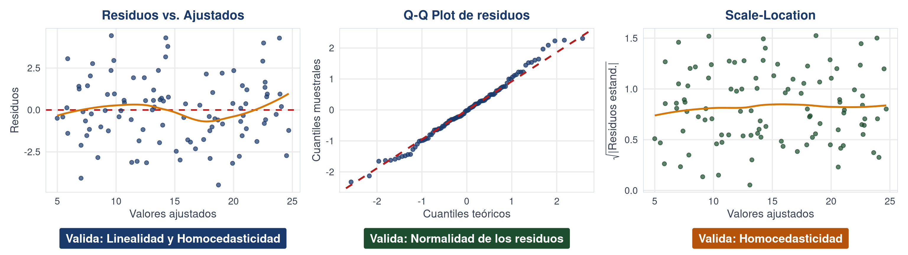
Conclusión del diagnóstico:
Los gráficos de residuos no muestran patrones sistemáticos importantes. Los residuos se distribuyen alrededor de cero, presentan un comportamiento aproximadamente normal y mantienen una dispersión relativamente constante.
Por lo tanto, existe evidencia gráfica de que los supuestos de linealidad, normalidad e igualdad de varianzas (homocedasticidad) son razonablemente aceptables para el modelo ajustado.
Validación de supuestos mediante pruebas estadísticas
Además del diagnóstico visual, los supuestos del modelo pueden evaluarse mediante pruebas estadísticas que permiten respaldar las conclusiones obtenidas a partir de los gráficos.
Normalidad
Prueba de Shapiro-Wilk
Debido a que el \(\text{valor-p es mayor que 0.05}\), no se rechaza la normalidad de los residuos.
Homocedasticidad
Prueba de Breusch-Pagan
De acuerdo a este resultado: \(\text{valor-p es mayor que 0.05}\), se considera constante la varianza de los errores.
Conclusión del diagnóstico del modelo
Los gráficos diagnósticos y las pruebas estadísticas indican que los residuos del modelo presentan un comportamiento compatible con los supuestos de regresión lineal.
La normalidad de los errores, la estabilidad de la varianza y la independencia de las observaciones permiten considerar adecuado el modelo ajustado.
Por lo tanto, el modelo:
\[ \hat{Y}=3.26+0.0258X \]
proporciona una representación válida de la relación entre la dosis de nitrógeno aplicada y el rendimiento del maíz dentro del rango evaluado.
Conclusión
El incremento de la fertilización nitrogenada se relaciona con aumentos significativos en el rendimiento del cultivo, por lo que el modelo puede utilizarse como herramienta de apoyo para interpretar la respuesta productiva del maíz.
Implementación completa en R
#=========================================
# 1. Ingreso de los datos
#=========================================
nitrogeno <- c(
40, 60, 80, 100,
120, 140, 160, 180
)
rendimiento <- c(
4.2, 4.8, 5.3, 5.9,
6.4, 6.8, 7.3, 7.8
)
datos <- data.frame(
nitrogeno,
rendimiento
)
#=========================================
# 2. Exploración gráfica
#=========================================
plot(
rendimiento ~ nitrogeno,
pch = 19,
col = "#2563eb",
cex = 1.4,
xlab = "Dosis de nitrógeno (kg/ha)",
ylab = "Rendimiento (t/ha)"
)
abline(
lm(rendimiento ~ nitrogeno),
col = "#dc2626",
lwd = 3
)
#=========================================
# 3. Ajuste del modelo
#=========================================
modelo <- lm(
rendimiento ~ nitrogeno,
data = datos
)
summary(modelo)
#=========================================
# 4. Diagnóstico gráfico
#=========================================
par(mfrow = c(1,3))
plot(
modelo,
which = 1:3,
pch = 19,
col = "#1a3a6b"
)
#=========================================
# 5. Pruebas de supuestos
#=========================================
shapiro.test(residuals(modelo))
library(lmtest)
bptest(modelo)
dwtest(modelo)
#=========================================
# 6. Predicciones
#=========================================
predict(modelo)Resumen Regresión lineal simple
- Modelo
\[ Y=\beta_0+\beta_1X+e \]
Describe la relación entre una variable explicativa y una variable respuesta.
- Estimación
Los parámetros del modelo se estiman mediante el método de mínimos cuadrados ordinarios (MCO).
- Interpretación
Los coeficientes permiten cuantificar el efecto de la variable explicativa sobre la variable respuesta.
- Bondad de ajuste
El coeficiente de determinación
\[ R^2 \]
mide la proporción de variabilidad explicada por el modelo.
- Inferencia
Las pruebas de hipótesis permiten determinar si la relación observada es estadísticamente significativa.
- Diagnóstico
Los supuestos del modelo se verifican mediante gráficos diagnósticos y pruebas estadísticas.
Idea central:
La regresión lineal simple permite describir y explicar la relación entre dos variables cuantitativas mediante un modelo lineal ajustado por mínimos cuadrados ordinarios.
Taller en clase
1. Estimación manual por mínimos cuadrados ordinarios
Problema
Se analiza la relación entre la fertilización nitrogenada y el rendimiento del café en una finca de Antioquia.
Modelo:
\[ Y_i=\beta_0+\beta_1X_i+\varepsilon_i \]
X: Nitrógeno aplicado (kg/ha)
Y: Rendimiento del café (kg/ha)
Datos
| X | Y |
|---|---|
| 50 | 1800 |
| 80 | 2200 |
| 100 | 2500 |
| 120 | 2700 |
| 150 | 3100 |
Actividad:
Construya la tabla auxiliar y calcule los estimadores MCO:
\[ \hat{\beta}_1=b_1=\frac{S_{xy}}{S_{xx}}=\frac{\sum_{i=1}^{n}(X_i-\bar X)(Y_i-\bar Y)}{\sum_{i=1}^{n}(X_i-\bar X)^2} \qquad \hat{\beta}_0=b_0=\bar Y-\hat{\beta}_1\bar X \]
Construya el modelo ajustado e interprete el efecto del nitrógeno sobre el rendimiento.
2. Interpretación de una regresión mediante R
Caso aplicado
Cultivo de tomate bajo invernadero.
Se evalúa si el agua de riego explica el rendimiento del cultivo.
\[
Y=\beta_0+\beta_1X+\varepsilon
\]
X: Agua (L/planta)
Y: Rendimiento (kg/planta)
Resultado en R
lm(rendimiento ~ agua)
β₀ = 1.850
β₁ = 0.065
p-value < 0.001
R² = 0.81
Análisis
Construya:
\[ \hat Y=\hat{\beta_0}+\hat{\beta_1}X \]
Interprete:
¿El modelo permite explicar el rendimiento del cultivo a partir del agua aplicada?
3. Validación de un modelo de regresión lineal
Planteamiento
Un investigador evalúa si la cantidad de agua aplicada influye sobre el rendimiento del tomate bajo invernadero.
Se ajusta un modelo de regresión lineal simple:
\[ Y_i=\beta_0+\beta_1X_i+\varepsilon_i \]
Variable explicativa:
Agua aplicada (L/planta/día)
Variable respuesta:
Rendimiento del cultivo (kg/planta)
Reto del análisis
A partir de los resultados obtenidos en R:
1. Construya el modelo estimado.
2. Interprete los coeficientes.
3. Evalúe la significancia estadística.
4. Verifique los supuestos del modelo.
5. Elabore una conclusión de acuerdo al planteamiento.
Diagnóstico Gráfico del Modelo
Relación entre Variables
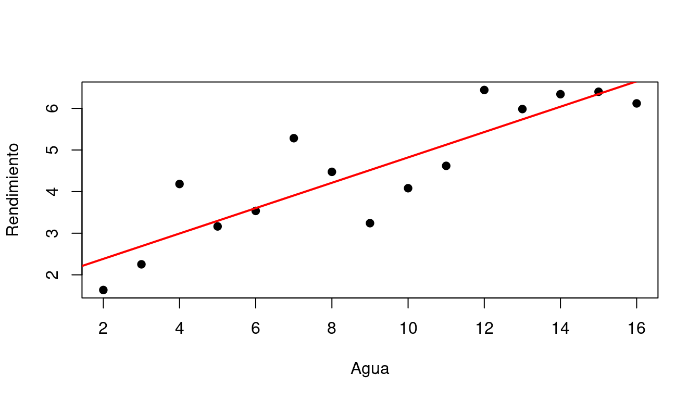
Diagnóstico de Residuos
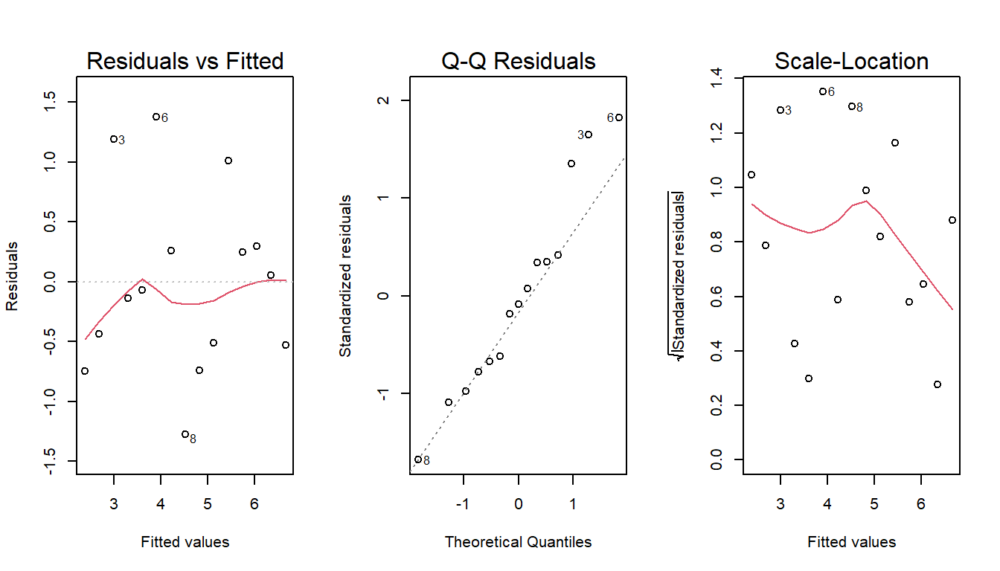
Resultados Numéricos y Validación del Modelo
Summary del Modelo
Call:
lm(formula = rendimiento ~ agua, data = datos)
Residuals:
Min 1Q Median 3Q Max
-1.27570 -0.51927 -0.06649 0.28108 1.37594
Coefficients:
Estimate Std. Error t value Pr(>|t|)
(Intercept) 1.77426 0.46915 3.782 0.00228 **
agua 0.30477 0.04699 6.485 2.05e-05 ***
---
Signif. codes: 0 '***' 0.001 '**' 0.01 '*' 0.05 '.' 0.1 ' ' 1
Residual standard error: 0.7864 on 13 degrees of freedom
Multiple R-squared: 0.7639, Adjusted R-squared: 0.7457
F-statistic: 42.06 on 1 and 13 DF, p-value: 2.05e-05Normalidad
Shapiro-Wilk normality test
data: residuals(modelo)
W = 0.95543, p-value = 0.6136Homocedasticidad
studentized Breusch-Pagan test
data: modelo
BP = 0.79548, df = 1, p-value = 0.3724Independencia
Durbin-Watson test
data: modelo
DW = 1.7186, p-value = 0.1888
alternative hypothesis: true autocorrelation is greater than 0